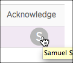

When you acknowledge an incident, this indicates you're taking ownership of it. This is useful to let others who've received the notification know that you've taken responsibility for it.
Follow your organization's guidelines for what responsibilities you are agreeing to own when you acknowledge an incident. By acknowledging the incident, this simply flags your name and notifies others.
To provide a quick reference to your organization's standard operating procedures for handling an alert, you can include a runbook URL in the condition thresholds for the alert policy. The UI will include the runbook URL in Incidents pages and in email notifications as applicable.
Only one person can acknowledge an incident. Once you acknowledge it, you can't undo it. If others try to acknowledge the same incident (for example, from their email notification), the incident's History page will appear, showing that the incident has been acknowledged.
The user interface allows you to view incidents and acknowledge them, either from the Incidents index or from the selected incident itself. The Incidents page provides details about the incident history so you can more easily analyze the chain of events and their timeline throughout an incident.
To acknowledge an incident from the user interface:
This automatically notifies everyone who has been set up to receive the notification. The UI also automatically adds your name (or avatar if applicable) to the incident's Acknowledge column.
Your incident rollup preference determines whether and how Alerts will group the additional violations in the Incidents page. If you acknowledge an incident and new violations occur that roll up into the incident you just acknowledged, no further notifications will be sent out until the incident closes.
To view any incidents you have acknowledged:
You can use additional methods (channels) to acknowledge notifications. For example: